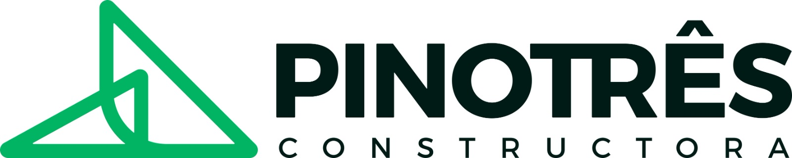

GUÍA DE VIVIENDAVIS
Subsidios de vivienda: una guía para comenzar
Conoce qué tipos de apoyos pueden existir, quién los administra y qué revisar antes de postularte.

CONSTRUCTORA · CUNDINAMARCA
Creamos proyectos inmobiliarios donde el diseño, la funcionalidad y el bienestar se encuentran.
Somos una constructora colombiana enfocada en el diseño, construcción, gerencia, promoción y venta de proyectos inmobiliarios. Integramos experiencia, innovación y gestión ambiental para crear espacios que acompañan nuevas historias.
Más sobre PINOTRES ↗Escuchamos, planeamos y construimos cuidando los detalles. Nuestro compromiso es desarrollar lugares funcionales, perdurables y pensados para las personas.

Un proyecto residencial en el casco urbano de Silvania, concebido para equilibrar área, confort y funcionalidad.
Características, disponibilidad, precios y condiciones sujetos a confirmación por parte de la sala de ventas.
Conoce el proyecto ↗Conoce el apartamento modelo de Altezza desde donde estés. Muévete por los espacios y descubre otra forma de visualizar tu próximo hogar.
Abrir recorrido 360° ↗RECORRIDO VIRTUAL INTERACTIVOIdeas claras para entender el proceso de comprar vivienda, explorar proyectos y tomar decisiones informadas.
Conoce qué tipos de apoyos pueden existir, quién los administra y qué revisar antes de postularte.
Documentos, presupuesto, tiempos y preguntas clave para conversar con una constructora.
Una mirada a la ubicación, la demanda, los costos y el horizonte de inversión.
Los subsidios, requisitos, montos y convocatorias pueden cambiar. Verifica siempre la vigencia directamente con las entidades oficiales y tu caja de compensación.
Te orientamos para que conozcas el proyecto y consultes qué alternativas de financiación o subsidio podrían aplicar a tu situación.
Conoce novedades, recorridos y espacios de preguntas con nuestro equipo. Consulta nuestras redes para conocer los anuncios de próximas transmisiones y actividades.
Las fechas de transmisiones y eventos se anunciarán en nuestros canales oficiales.
Ver novedades ↗Explora cada etapa y descubre qué puedes preparar antes de tomar una decisión.
Haz un balance de ingresos, gastos, ahorros y obligaciones. Define una cuota mensual que puedas asumir sin comprometer tu tranquilidad.
El seguimiento de visitas, interacciones y conversaciones permite entender qué información es más útil para nuestra comunidad y optimizar la experiencia digital.
No se muestran cifras de ejemplo como si fueran resultados reales. Los reportes se habilitan al conectar las cuentas oficiales y el ID de medición.
Conoce nuestros espacios, proyectos y momentos a través de esta selección audiovisual.
Déjanos una opinión, una pregunta o una idea. Queremos escucharte.
Aún no hay opiniones publicadas en este navegador.
El equipo PINOTRES puede convertir los resultados del sitio y la retroalimentación en acciones concretas: contenidos más útiles, respuestas oportunas y una experiencia de asesoría más clara.
El informe debe completarse con datos reales del periodo evaluado; este sitio no inventa resultados ni conclusiones.
Visítanos o escríbenos. Nuestro equipo puede orientarte sobre proyectos, disponibilidad y proceso de compra.
Consulta la ubicación exacta y agenda tu visita con nuestro equipo comercial.
Carrera 2 No. 14-37
Silvania, Cundinamarca